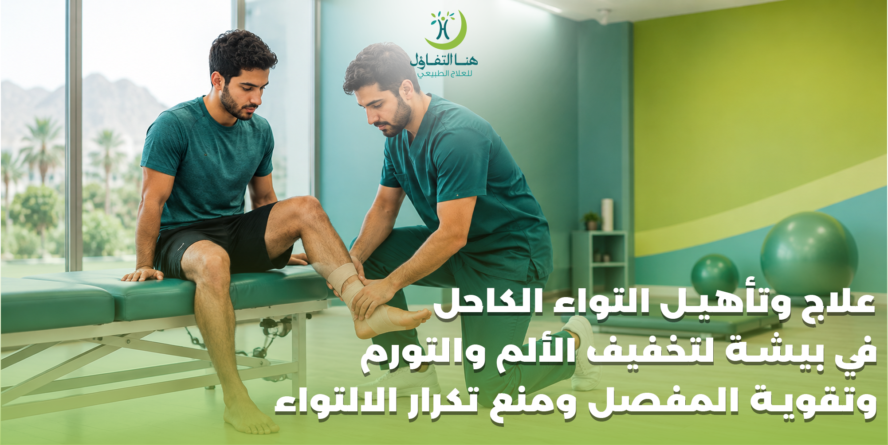

يُعد التواء الكاحل من الإصابات الشائعة التي يمكن أن تحدث أثناء المشي أو الجري أو ممارسة الرياضة، وقد تنتج عن حركة مفاجئة أو التواء القدم بطريقة تتجاوز نطاق الحركة الطبيعي للمفصل.
ولا يقتصر تأثير الالتواء على الألم الذي يظهر مباشرة بعد الإصابة؛ فقد يصاحبه تورم أو كدمات أو صعوبة في تحريك القدم وتحميل الوزن عليها، كما قد يؤدي عدم تأهيل الكاحل بشكل مناسب إلى استمرار الضعف أو عدم الثبات وزيادة احتمالية تكرار الإصابة.
ويهدف علاج وتأهيل التواء الكاحل إلى التعامل مع الأعراض وتحسين حركة المفصل واستعادة قوة العضلات والتوازن والتحكم في القدم، ثم العودة التدريجية إلى الأنشطة اليومية والرياضية وفق حالة المصاب.
وفي مركز هنا التفاؤل للعلاج الطبيعي والتأهيل الطبي في بيشة يمكن تقييم الحالة ووضع برنامج تأهيلي يتناسب مع درجة الإصابة وقدرة الشخص على الحركة واحتياجاته اليومية أو الرياضية.
ملاحظة مهمة: هذا المقال للتوعية ولا يغني عن تقييم الطبيب أو أخصائي العلاج الطبيعي، خصوصًا عند وجود ألم شديد أو تشوه أو عدم القدرة على المشي.
ما هو التواء الكاحل؟
التواء الكاحل هو إصابة تحدث عندما تتمدد أربطة الكاحل بشكل زائد أو تتعرض للتمزق بدرجات مختلفة نتيجة حركة مفاجئة أو التواء القدم.
والأربطة هي أنسجة قوية تربط العظام ببعضها وتساعد على تثبيت المفصل، ولذلك يمكن أن يؤدي إصابتها إلى ألم وتورم وشعور بعدم الثبات.
ومن أكثر الحالات شيوعًا أن تحدث الإصابة عندما تلتف القدم إلى الداخل أو الخارج بصورة مفاجئة، خصوصًا أثناء:
- الجري.
- القفز.
- تغيير الاتجاه بسرعة.
- المشي على سطح غير مستوٍ.
- ممارسة كرة القدم.
- ممارسة كرة السلة.
- ممارسة الرياضات التي تتطلب حركات سريعة.
- التعثر أو السقوط.
- ارتداء أحذية غير مناسبة للنشاط.
وتختلف شدة الإصابة من حالة لأخرى، لذلك لا يمكن تحديد درجة الالتواء أو مدة التعافي من الأعراض وحدها دون تقييم مناسب.
أعراض التواء الكاحل
تظهر أعراض التواء الكاحل بدرجات مختلفة حسب طبيعة الإصابة، ومن أبرزها:
ألم حول مفصل الكاحل
قد يظهر الألم مباشرة بعد حدوث الالتواء، وقد يزداد عند محاولة المشي أو تحريك القدم.
تورم الكاحل
يمكن أن يظهر التورم بعد الإصابة، وقد يزداد خلال الساعات الأولى.
ظهور الكدمات
قد تظهر كدمات حول الكاحل أو القدم نتيجة تأثر الأنسجة والأوعية الدموية الصغيرة في المنطقة.
صعوبة المشي
قد يجد المصاب صعوبة في تحميل وزن الجسم على القدم المصابة، خصوصًا في الإصابات الأكثر شدة.
تيبس المفصل
قد تصبح حركة الكاحل محدودة بسبب الألم والتورم.
ضعف الكاحل أو عدم ثباته
قد يشعر الشخص بأن الكاحل غير ثابت أو أنه قد يلتوي مرة أخرى أثناء المشي أو الحركة.
تنبيه:
وتُعد هذه الأعراض من العلامات الشائعة لالتواء الكاحل، لكن وجود ألم شديد جدًا أو عدم القدرة على المشي أو تغير شكل القدم قد يشير إلى إصابة تحتاج إلى تقييم طبي عاجل، ومنها احتمال وجود كسر.
درجات التواء الكاحل
تختلف شدة التواء الكاحل بحسب مقدار الضرر الذي تعرضت له الأربطة.
التواء بسيط
يحدث فيه تمدد محدود للأربطة، وقد يكون الألم والتورم محدودين نسبيًا، مع إمكانية الحركة بدرجات متفاوتة.
التواء متوسط
قد يترافق مع إصابة أكبر في الأربطة، ويكون الألم والتورم وصعوبة المشي أكثر وضوحًا.
التواء شديد
قد يتضمن تمزقًا كبيرًا في الأربطة، وقد يصاحبه عدم ثبات واضح وصعوبة كبيرة في تحميل الوزن على القدم.
ولهذا تختلف خطة التأهيل من شخص لآخر، ولا يُنصح بتطبيق برنامج تمارين موحد على جميع حالات التواء الكاحل.
ما أسباب التواء الكاحل؟
يمكن أن يحدث الالتواء نتيجة مجموعة من الحركات أو الظروف التي تضع الكاحل تحت ضغط مفاجئ.
ومن أكثر الأسباب شيوعًا:
- الهبوط الخاطئ بعد القفز.
- الجري على أرض غير مستوية.
- تغيير الاتجاه بشكل مفاجئ.
- التعثر.
- السقوط.
- الالتفاف المفاجئ للقدم.
- ممارسة الرياضة دون الاستعداد المناسب.
- ضعف عضلات القدم والكاحل.
- ضعف التوازن والتحكم في المفصل.
- الإصابة السابقة بالتواء الكاحل.
وتزداد احتمالية تكرار الالتواء عند بعض الأشخاص إذا استمر ضعف الكاحل أو لم تتم استعادة التوازن والقوة والحركة بشكل كافٍ بعد الإصابة الأولى.
لماذا يحتاج التواء الكاحل إلى التأهيل؟
قد يعتقد البعض أن انتهاء الألم يعني أن الكاحل عاد إلى حالته الطبيعية بالكامل، لكن العودة إلى النشاط لا تعتمد على اختفاء الألم فقط.
بعد الإصابة قد تتأثر:
- قوة العضلات.
- مدى حركة المفصل.
- التوازن.
- التحكم في القدم.
- القدرة على تحمل الأحمال.
- الثبات أثناء الحركة.
ولهذا تركز برامج التأهيل على استعادة الحركة والقوة والتوازن بشكل تدريجي.
وتشير إرشادات العلاج الطبيعي إلى أهمية إعادة الحركة والتحميل التدريجي ثم تطوير القوة والتوازن والعودة إلى النشاط بصورة تدريجية، بدل الاعتماد على الراحة الطويلة وحدها.
علاج التواء الكاحل في المراحل الأولى
تحتاج الأيام الأولى بعد الإصابة إلى التعامل مع الألم والتورم وحماية المنطقة المصابة.
وخلال المرحلة المبكرة يمكن أن تشمل الرعاية:
- حماية الكاحل من الحركات التي تزيد الإصابة.
- تقليل النشاط المسبب للألم.
- رفع القدم عند الراحة.
- استخدام الكمادات الباردة بطريقة آمنة عند ملاءمتها.
- استخدام وسيلة دعم عند الحاجة ووفق التقييم.
- تجنب تحميل الكاحل بشكل يسبب ألمًا شديدًا.
وتوصي مصادر NHS باستخدام الحماية والراحة والثلج والضغط ورفع الطرف المصاب خلال الأيام الأولى، مع البدء بالحركة تدريجيًا عندما يسمح الألم بذلك.
تنبيه:
لكن هذه الإجراءات ليست بديلًا عن التقييم الطبي إذا كانت الإصابة شديدة أو ظهرت علامات غير طبيعية.
هل الراحة وحدها تكفي لعلاج التواء الكاحل؟
الراحة مهمة في بداية الإصابة، لكنها ليست بالضرورة الحل الكامل.
فالاستمرار في عدم تحريك الكاحل لفترة طويلة قد يؤدي إلى:
- • تيبس المفصل.
- • ضعف العضلات.
- • انخفاض القدرة على الحركة.
- • صعوبة العودة للنشاط.
ولهذا تبدأ الحركة التدريجية عندما تسمح حالة الإصابة، ثم يتم الانتقال إلى تمارين المرونة والقوة والتوازن وفق المرحلة المناسبة.
وتؤكد برامج إعادة تأهيل الكاحل على أهمية الحركة التدريجية واستعادة القوة والمرونة والتوازن قبل العودة الكاملة للأنشطة الأكثر إجهادًا.
العلاج الطبيعي لالتواء الكاحل
يُستخدم العلاج الطبيعي ضمن برامج تأهيل التواء الكاحل لمساعدة المصاب على استعادة الوظائف التي تأثرت بسبب الإصابة.
تحسين مدى الحركة
تساعد تمارين الحركة التدريجية على استعادة حركة مفصل الكاحل وتقليل التيبس.
تقوية العضلات
يتم العمل على عضلات الساق والقدم والكاحل بهدف تحسين القدرة على دعم المفصل.
تمارين التوازن
تساعد تدريبات التوازن على تحسين التحكم في الكاحل أثناء الوقوف والحركة.
التدريب الوظيفي
يتم الانتقال تدريجيًا إلى الحركات التي يحتاجها الشخص في حياته اليومية أو نشاطه الرياضي.
العودة التدريجية للنشاط
لا تكون العودة للرياضة أو الجري بشكل مفاجئ، بل يتم رفع مستوى النشاط تدريجيًا وفق قدرة الكاحل على تحمل الحمل.
وتوضح برامج AAOS أن تقوية العضلات الداعمة للقدم والكاحل تساعد على تحسين ثبات المفصل، بينما تساهم تمارين المرونة في استعادة مدى الحركة.
تمارين الحركة بعد التواء الكاحل
يمكن أن تتضمن برامج التأهيل تمارين بسيطة لتحريك الكاحل، مثل:
- تحريك القدم لأعلى ولأسفل.
- تحريك القدم للداخل والخارج.
- تدوير الكاحل بحركات دائرية.
- تحريك القدم ضمن نطاق مريح.
- تمارين المرونة تدريجيًا.
وتُستخدم هذه التمارين وفق المرحلة المناسبة للحالة، وليس من الضروري أن تكون كل التمارين مناسبة منذ اليوم الأول.
بعض الإرشادات الطبية تبدأ تمارين الحركة المبكرة خلال أول أيام الإصابة وفق قدرة المصاب، ثم تنتقل لاحقًا إلى تمارين المرونة والقوة والتوازن.
تمارين تقوية الكاحل بعد الالتواء
بعد تحسن الألم وبدء استعادة الحركة، يمكن الانتقال إلى تمارين تقوية مناسبة.
تمارين المقاومة
يمكن استخدام شريط مقاومة لتقوية حركة رفع القدم وخفضها وفق قدرة المصاب.
رفع الكعب
يساعد على تقوية عضلات الساق والكاحل عندما تصبح الحالة مناسبة لهذا المستوى من التحميل.
تمارين التحكم بالقدم
تساعد على تطوير قدرة القدم والكاحل على التعامل مع الحركة والحمل.
وتتضمن برامج AAOS تمارين باستخدام شريط مقاومة لحركات الكاحل المختلفة بهدف تقوية العضلات الداعمة للمفصل.
لكن عدد التكرارات وشدة المقاومة يجب أن يتناسبا مع مرحلة الإصابة وحالة الشخص.
تمارين التوازن بعد التواء الكاحل
التوازن من العناصر المهمة في تأهيل الكاحل، خصوصًا لدى الأشخاص الذين يعانون من تكرار الالتواء.
ويتم الانتقال بين المراحل حسب قدرة المصاب.
وتتضمن برامج تأهيل الكاحل تدريبات للوقوف على قدم واحدة وتمارين لتحسين التوازن والتحكم في المفصل.
علاج عدم ثبات الكاحل بعد الالتواء
في بعض الحالات قد يستمر الشعور بأن الكاحل "يفلت" أو يميل للالتواء مرة أخرى بعد الإصابة.
وقد يرتبط ذلك بعوامل مثل:
- ضعف العضلات.
- ضعف التوازن.
- محدودية الحركة.
- عدم اكتمال التأهيل.
- تكرار الالتواءات السابقة.
وهنا لا يكون الهدف مجرد تقليل الألم، بل العمل على استعادة قوة وثبات وتحكم الكاحل.
وقد يتضمن التأهيل تدريبات القوة والتوازن والحركة والمهارات الوظيفية، وفق تقييم الحالة.
تأهيل التواء الكاحل للرياضيين
الرياضيون يحتاجون إلى عناية خاصة عند العودة إلى النشاط، لأن العودة المبكرة إلى الجري أو القفز أو تغيير الاتجاه قد تعرض الكاحل لحمل أكبر قبل استعادة قدرته.
ويجب ألا تكون العودة لمجرد أن الألم أصبح أقل؛ بل يجب أن يكون الكاحل قادرًا على تحمل متطلبات النشاط الرياضي.
وتشير برامج التأهيل إلى ضرورة استعادة الحركة والقوة والتوازن والتقدم التدريجي قبل العودة الكاملة للأنشطة الرياضية.
متى يمكن العودة إلى الرياضة بعد التواء الكاحل؟
لا توجد مدة واحدة تناسب جميع الحالات.
فالإصابات البسيطة قد تتحسن خلال فترة أقصر، بينما تحتاج الالتواءات الأكثر شدة إلى وقت أطول للتعافي والتأهيل.
وتذكر إرشادات NHS أن معظم حالات الالتواءات والشدود تتحسن خلال نحو أسبوعين، لكن الإصابات الشديدة قد تحتاج إلى أشهر، كما يُنصح بتجنب الأنشطة المجهدة مثل الجري لفترة قد تصل إلى 8 أسابيع بحسب الحالة.
وتوجد برامج تأهيل للكاحل تمتد على عدة مراحل، مع انتقال تدريجي من الحركة والحماية إلى القوة والتوازن والعودة للنشاط.
لذلك لا ينبغي الاعتماد على عدد ثابت من الأيام للعودة إلى الرياضة.
علامات تدل على أن الكاحل يحتاج إلى مزيد من التأهيل
قد يكون من المفيد تقييم الكاحل إذا استمر وجود:
- ألم أثناء المشي.
- تورم متكرر.
- ضعف في الكاحل.
- صعوبة في صعود الدرج.
- صعوبة في الجري.
- عدم القدرة على الوقوف على القدم المصابة.
- ضعف التوازن.
- تكرار الالتواء.
- الخوف من تحميل الوزن.
- محدودية حركة الكاحل.
إذا استمرت الأعراض أو أثرت في الأنشطة اليومية، فقد يكون التقييم لدى الطبيب أو أخصائي العلاج الطبيعي مناسبًا.
متى يكون التواء الكاحل حالة تحتاج إلى تقييم عاجل؟
ليس كل ألم في الكاحل مجرد التواء.
يجب طلب التقييم الطبي سريعًا عند وجود:
- ألم شديد جدًا.
- عدم القدرة على المشي أو تحميل الوزن.
- تغير واضح في شكل الكاحل أو القدم.
- سماع صوت كسر أو فرقعة قوية وقت الإصابة.
- تورم أو كدمات شديدة أو متزايدة.
- خدر أو تنميل.
- تغير لون القدم.
- برودة القدم.
- تدهور الأعراض بدل تحسنها.
تنبيه هام:
وقد تحتاج بعض الإصابات إلى الأشعة لاستبعاد وجود كسر أو إصابة أخرى.
الفرق بين التواء الكاحل وكسر الكاحل
قد تتشابه بعض الأعراض بين الالتواء والكسر، مثل:
- الألم.
- التورم.
- صعوبة المشي.
- ظهور الكدمات.
لذلك لا يمكن الاعتماد على شكل التورم أو الألم وحده لتحديد نوع الإصابة.
وجود تشوه واضح أو عدم القدرة على المشي أو سماع صوت كسر وقت الإصابة يستدعي تقييمًا طبيًا.
التواء الكاحل المتكرر
من المشكلات التي قد تظهر لدى بعض الأشخاص تكرار التواء الكاحل أكثر من مرة.
وقد يؤدي تكرار الإصابة إلى استمرار الشعور بعدم الثبات أو الخوف من الحركة.
وهنا يركز التأهيل على معالجة العوامل التي قد تساهم في تكرار الإصابة، مثل:
- ضعف العضلات.
- ضعف التوازن.
- نقص مدى الحركة.
- ضعف التحكم أثناء الحركة.
- العودة السريعة للرياضة.
ولهذا لا ينبغي اعتبار انتهاء الألم نهاية برنامج التأهيل في كل الحالات.
علاج التواء الكاحل عند الأطفال
يمكن أن تحدث إصابات الكاحل لدى الأطفال أثناء اللعب والرياضة والسقوط.
لكن التعامل مع إصابة الطفل يختلف حسب العمر ومكان الألم وطبيعة الإصابة، لذلك يجب تقييم الحالات التي يكون فيها الألم شديدًا أو الحركة محدودة أو لا يستطيع الطفل المشي بشكل طبيعي.
ويجب عدم تطبيق تمارين علاجية للطفل بشكل عشوائي دون معرفة طبيعة الإصابة.
علاج التواء الكاحل لكبار السن
قد يكون التواء الكاحل أكثر تأثيرًا على الحركة لدى كبار السن، خصوصًا إذا كان الشخص يعاني من ضعف في التوازن أو لديه صعوبة سابقة في المشي.
وقد يركز التأهيل في هذه الحالات على:
- • استعادة الحركة.
- • تقوية العضلات.
- • تحسين التوازن.
- • تحسين المشي.
- • تقليل الخوف من الحركة.
- • العودة التدريجية للأنشطة اليومية.
ويتم تحديد التمارين ومستوى التحميل وفق الحالة الصحية والقدرة الحركية للشخص.
أخطاء شائعة بعد التواء الكاحل
العودة للرياضة بمجرد انخفاض الألم
انخفاض الألم لا يعني بالضرورة عودة القوة والتوازن إلى المستوى المطلوب.
الراحة الطويلة دون حركة
قد يؤدي عدم الحركة لفترة أطول من اللازم إلى تيبس وضعف.
ممارسة تمارين قوية مبكرًا
التمارين يجب أن تتناسب مع المرحلة الحالية للإصابة.
تجاهل التواءات الكاحل المتكررة
تكرار الإصابة يستحق التقييم والتأهيل بدل التعامل مع كل إصابة على أنها مشكلة منفصلة.
عدم الاهتمام بالتوازن
التوازن عنصر مهم في إعادة تأهيل الكاحل، خاصة للرياضيين والأشخاص الذين سبق أن تعرضوا للالتواء.
العودة المفاجئة للجري
من الأفضل أن تكون العودة للنشاط تدريجية وفق قدرة الكاحل على تحمل الأحمال.
الوقاية من تكرار التواء الكاحل
بعد التعافي، يمكن أن يساعد الاهتمام بقوة العضلات والتوازن والمرونة والتحكم في الحركة على تقليل عوامل الخطر المرتبطة بتكرار الإصابة.
ومن الإجراءات المفيدة:
- ممارسة تمارين تقوية مناسبة.
- تدريب التوازن.
- تحسين مرونة الكاحل.
- ارتداء حذاء مناسب للنشاط.
- الإحماء قبل الرياضة.
- تجنب زيادة شدة التدريب فجأة.
- معالجة أي ضعف أو محدودية حركة مستمرة.
- العودة للرياضة تدريجيًا.
وتشير برامج تكييف القدم والكاحل إلى أهمية القوة والمرونة لدعم ثبات المفصل وتقليل احتمالية الإصابة مجددًا.
برنامج تأهيل التواء الكاحل في هنا التفاؤل
يختلف برنامج العلاج الطبيعي من شخص إلى آخر، لذلك يبدأ التعامل مع الحالة بفهم طبيعة الإصابة ومستوى الألم والحركة والقدرة على المشي.
تقييم الحالة
التعرف على الأعراض والحركة والقوة والتوازن والقدرة على تحميل الوزن.
التعامل مع الألم والتورم
استخدام الأساليب المناسبة وفق مرحلة الإصابة وحالة المريض.
استعادة الحركة
العمل على تحسين حركة مفصل الكاحل تدريجيًا.
تقوية العضلات
تقوية العضلات الداعمة للكاحل والساق بما يتناسب مع قدرة الحالة.
تدريب التوازن
تطوير قدرة المصاب على التحكم في الكاحل أثناء الوقوف والحركة.
التدريب الوظيفي
تجهيز الكاحل للأنشطة اليومية أو الرياضية التي يحتاج إليها الشخص.
العودة التدريجية للنشاط
رفع مستوى النشاط خطوة بخطوة وفق استجابة الكاحل.
لماذا اختيار مركز متخصص مهم في تأهيل التواء الكاحل؟
لأن التواء الكاحل ليس بنفس الدرجة عند جميع الأشخاص.
فالبرنامج المناسب لشخص لديه إصابة بسيطة يختلف عن البرنامج الخاص برياضي يعاني من التواء متكرر أو شخص لديه ضعف في التوازن.
كما أن تحديد مستوى التمارين يجب أن يراعي:
- درجة الإصابة.
- الألم.
- التورم.
- مدى الحركة.
- قوة العضلات.
- التوازن.
- طبيعة النشاط اليومي.
- نوع الرياضة عند الرياضيين.
- وجود إصابات سابقة.
ولهذا يساعد التقييم المتخصص على اختيار التمارين والتدرج المناسب بدل الاعتماد على برنامج عام للجميع.
أسئلة شائعة عن علاج وتأهيل التواء الكاحل
هل التواء الكاحل يحتاج إلى علاج طبيعي؟
ليس كل التواء يحتاج إلى نفس مستوى التدخل، لكن العلاج الطبيعي قد يساعد في الحالات التي تستمر فيها الأعراض أو يكون هناك ضعف في الحركة أو القوة أو التوازن، كما يمكن أن يكون جزءًا من تأهيل الإصابات الأكثر شدة.
كم يستغرق علاج التواء الكاحل؟
تختلف المدة حسب شدة الإصابة وطبيعة الشخص واستجابته للعلاج. بعض الإصابات تتحسن خلال أسابيع، بينما قد تحتاج الإصابات الشديدة إلى فترة أطول.
هل يمكن المشي بعد التواء الكاحل؟
يعتمد ذلك على شدة الإصابة وقدرة الشخص على تحمل الوزن. إذا كان المشي يسبب ألمًا شديدًا أو كان الشخص غير قادر على تحميل الوزن، فمن الأفضل الحصول على تقييم طبي.
هل التواء الكاحل يسبب تورمًا؟
نعم، التورم من الأعراض الشائعة بعد التواء الكاحل، وقد يصاحبه ألم أو كدمات وصعوبة في الحركة.
هل يمكن علاج التواء الكاحل في المنزل؟
الإصابات البسيطة قد تتحسن مع الرعاية الأولية والحركة التدريجية، لكن يجب طلب التقييم عند وجود أعراض شديدة أو عدم القدرة على المشي أو استمرار المشكلة دون تحسن.
هل الراحة وحدها تعالج التواء الكاحل؟
الراحة مهمة في المرحلة الأولى، لكن إعادة الحركة والقوة والتوازن تدريجيًا تعد جزءًا مهمًا من التأهيل، خصوصًا للعودة إلى النشاط.
متى أبدأ تمارين الكاحل؟
يختلف التوقيت حسب شدة الإصابة، لكن بعض الإرشادات تبدأ بحركات بسيطة مبكرة ضمن حدود الراحة، ثم تنتقل تدريجيًا إلى تمارين القوة والتوازن.
هل يمكن العودة للرياضة بعد التواء الكاحل؟
نعم في كثير من الحالات، لكن العودة ينبغي أن تكون تدريجية وبعد استعادة الحركة والقوة والتوازن والقدرة على أداء متطلبات النشاط الرياضي.
هل التواء الكاحل يمكن أن يتكرر؟
نعم، وقد يكون تكرار الالتواء مرتبطًا باستمرار ضعف القوة أو التوازن أو التحكم في الكاحل، لذلك يساعد التأهيل المتكامل على معالجة هذه الجوانب.
لماذا أشعر أن الكاحل غير ثابت بعد الإصابة؟
قد يكون ذلك مرتبطًا بضعف العضلات أو التوازن أو عدم اكتمال التأهيل، لكن استمرار عدم الثبات يستحق التقييم لتحديد السبب ووضع برنامج مناسب.
هل يمكن أن يكون الألم بسبب كسر وليس التواء؟
نعم، بعض الكسور قد تتشابه أعراضها مع الالتواء. عدم القدرة على المشي، أو وجود تشوه، أو ألم شديد جدًا، أو سماع صوت كسر وقت الإصابة يستدعي تقييمًا طبيًا.
هل العلاج الطبيعي يساعد الرياضيين بعد التواء الكاحل؟
يمكن أن يساعد برنامج التأهيل على استعادة الحركة والقوة والتوازن والمهارات المطلوبة للعودة إلى النشاط الرياضي بصورة تدريجية.
احجز موعدك لتأهيل التواء الكاحل في بيشة
إذا كنت تعاني من ألم أو تورم بعد التواء الكاحل، أو ما زلت تشعر بضعف وعدم ثبات أثناء المشي أو ممارسة الرياضة، فإن التقييم والتأهيل المناسبين يساعدان على تحديد احتياجات الحالة ووضع برنامج تدريجي لاستعادة الحركة والقوة والتوازن. لا تجعل التواء الكاحل المتكرر يعطل حركتك ونشاطك.